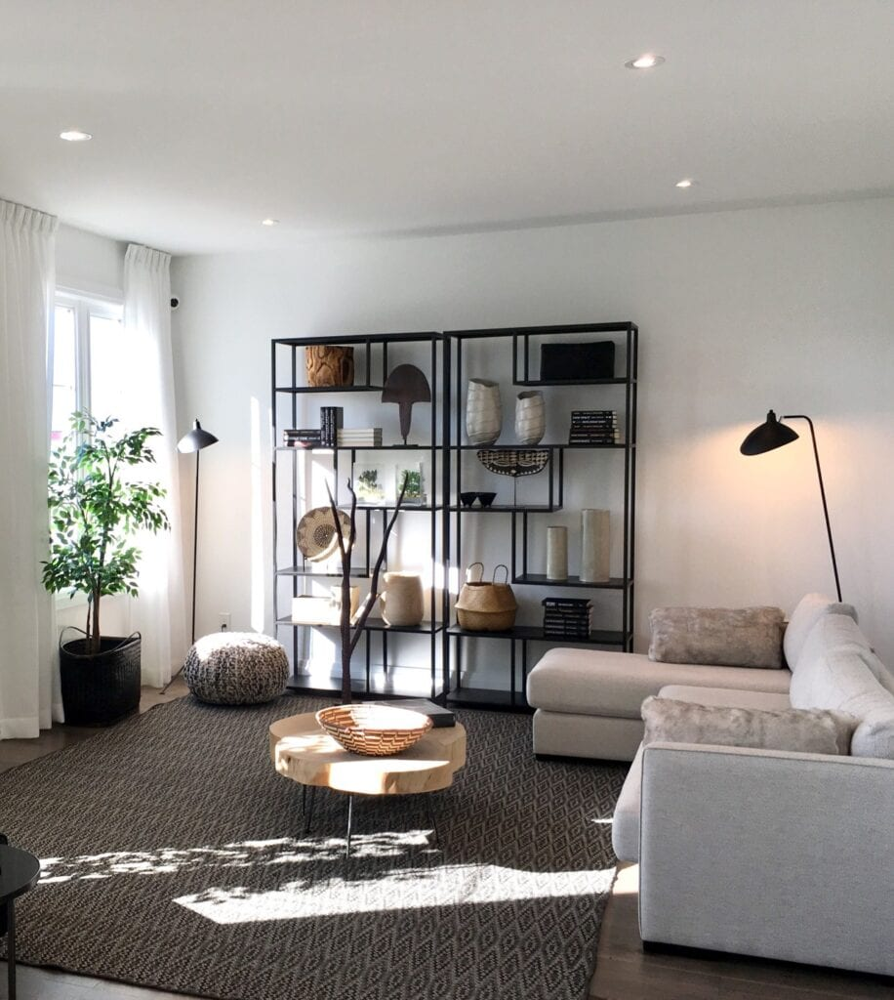

Bohemian style or Boho decor is for those who want their homes full of life, culture, and interesting items for all the world to see. This aesthetic flies in the face of modern sensibilities and embraces creative, carefree, and unconventional decor. Bohemian-style rooms tend to have certain similarities in that they are always eclectic and share similar features though no two rooms are ever completely alike.
Boho is inspired by people who choose to lead an unconventional life such as constant travelers, actors, and writers. The Bohemian style mirrors that life by combining objects, colors, and patterns from many areas of the world. If you are looking for a style that you can truly make your own, Bohemian design might be for you.

While there are no rules when it comes to Bohemian decorating, warm earthy colors are common, as are metallics and jewel tones. Think deep browns, greens, and grays for base colors, and then accessorize with saturated purple, fiery orange, and electric blue. Combining and layering colors is what makes this style unique. Feel free to mix patterns and textures, and don't be afraid to use styles that would not necessarily go together in a conventional way. Use dyed textiles and patterns from around the world—like Ikat from Cambodia or Suzani from Central Asia—to give the space a sense of fun and exoticism. Layer throws on top of furniture and try hanging tapestries and area rugs on the walls alongside your photos and art. If this all seems a bit much, keep in mind that while saturated color is key to the Bohemian style, white can have a place as a backdrop for richer tones. Use white to strategically bring a little visual space into the equation.